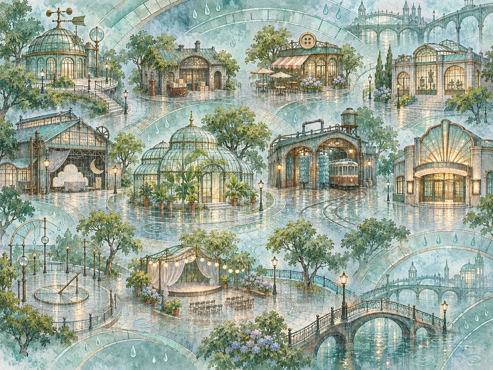

Бюро украденного дождя
Карты и фигурки ведущего
Игровой комплект
3 игрока · 4 игрока · 5 игроков · 6 игроков · 7 игроков
Карта кампании

Поля боя


Герои


Персонажи ведущего


Противники
 Плащ на лёгком каркасе 5Плащ на лёгком каркасе 3Плащ на лёгком каркасе 2Плащ на лёгком каркасе 1Плащ на лёгком каркасе 4
Плащ на лёгком каркасе 5Плащ на лёгком каркасе 3Плащ на лёгком каркасе 2Плащ на лёгком каркасе 1Плащ на лёгком каркасе 4 Каркасный дублёр 2Каркасный дублёр 1Каркасный дублёр 5Каркасный дублёр 4Каркасный дублёр 3
Каркасный дублёр 2Каркасный дублёр 1Каркасный дублёр 5Каркасный дублёр 4Каркасный дублёр 3 Зонтичный статист 1Зонтичный статист 5Зонтичный статист 4Зонтичный статист 2Зонтичный статист 3
Зонтичный статист 1Зонтичный статист 5Зонтичный статист 4Зонтичный статист 2Зонтичный статист 3